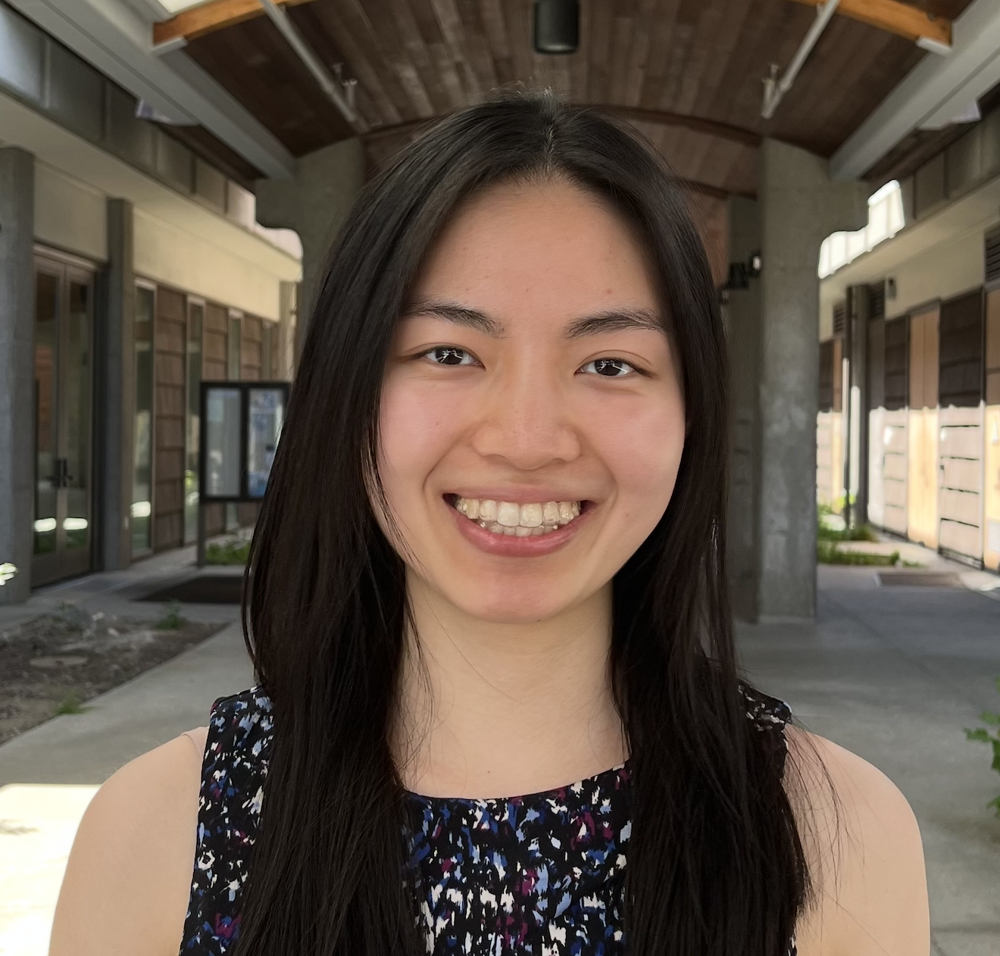

Lois Wong
AI Librarian, University of Chicago
I’ve had a longstanding obsession with silence—specifically, the idea of silence as a signifier and absence as a parsable signal. In Prince and Smolensky’s Optimality Theory, it is the non-words that reveal the underlying structure of a language. Debussy defines music as the silence between the notes; Cage shows how silence is compositional. Woolf cites unwritten books and Du Bois posits the “eloquent omissions and silences” in sorrow songs as articulations of pain and tragedy.
My work in AI and model evaluation is one instantiation of this obsession. I'm interested in how archival silence and unrepresentative training data surface as algorithmic bias and model error. Practically speaking, I'm experimenting with black-box methods to identify knowledge gaps from a model's outputs and exploring targeted remediation to close them. LMs learn from corpora that disproportionately preserve the profiles and perspectives of those historically afforded an education and platform while underrepresenting others due to factors like data quality and uneven digitization. These absences are not only historical; they are ongoing. People are still missing and being silenced, and building methods to find them is ultimately where I want to take my work.
I have a BA in Linguistics from UC Berkeley and an MSE in Computer Science from Johns Hopkins University, where my research focused on information retrieval, recommender systems, and NLP. Working across big tech, startups, nonprofits, and academia has given me a strong sense of how novel technologies are developed, adopted, and governed across different contexts and priorities. See my LinkedIn profile to learn more about being the first AI Librarian at the University of Chicago.
Projects
Symposium - Interdisciplinary Approaches to AI and Model Evaluation
Models long predate AI as a means of sense-making. Every field builds and evaluates them differently. This symposium puts those standards side by side and asks what they mean for evaluating AI systems that make decisions about people. Proceedings will be published in UChicago's institutional repository.Call for proposals to come.
Partner: SJSU AI Center for Civic and Social Good.
20 April 2027 | Regenstein 122, University of Chicago
Community of Practice
Noticing how many institutions are independently solving the same AI adoption and implementation challenges, I co-founded a cross-institutional community of practice with Sharesly Rodriguez (San José State University) and Will Huggins (Stanford). We develop openly licensed resources and infrastructure for collaboration to reduce duplicated effort and increase collective impact.
Gaita: A RAG System for Personalized Computer Science Education
Gaita is a conversational RAG system that generates personalized Computer Science learning pathways from open-access courseware. Inspired by my own transition into tech, Gaita makes CS education accessible to learners from non-technical and non-traditional backgrounds.
Essays
The Silent Account of American History
On how omission, lost names, and unsung songs constitute their own account of American identity.
What it Means to be an Artist — and Why I Study Computer Science
Refer to the endnotes to see the theories and theorists that motivated me to pivot into CS.
Optimality Theory, A Room of One's Own, and Education as a Panacea for Pain
Another "proof" of the silence thread citing theories and terminology from Linguistics (phonetics and phonology) and Literary Criticism.
My Personal Statement of Purpose
The PhD statement that got rejected everywhere that I still stand by (mostly). I followed the education thread but it wasn't quite the answer I was looking for. The original thread was always on silence and we shall see where that goes.
Everything is Worthwhile—Grounding in Classical NLP
During my undergraduate career, I fell madly in love with logic and all things formal. This is, unironically, how I made sense of the uncertainy, delayed validation, and lack of visible output during my transition into CS.
Mere Exposure, Affinity, and Homecoming: ∃x in Classical Music
On music theory, familiarity, beauty, and homecoming. Read until the end to see a funny meme I created.
View my full list of essays here.
Selected Talks
Upcoming Talks
ACRL 2027: Comparing Notes: Initial Impacts and Future Directions from AI Roles in the Library
9 April 2027 8:30a | Conference Presenter, with Sharesly Rodriguez
Oregon Convention Center, Portland, Oregon
Past Talks
Implementing an AI Evaluation Framework
IPLC Discovery Days Conference
October 2026 | Speaker/Panelist with David Bietila
Introduction to AI: A Foundations Seminar; Beyond the Basics: Taking Your AI Knowledge Further
An evening of two seminars for UChicago alumni, parents, and friends. The first covers what language models are, why they hallucinate, and how error differs from bias. The second argues what an AI system surfaces, ranks, and omits is not neutral, drawing on information retrieval, recommender systems, and survivorship bias.
September 2026 | Speaker
Guildhall, London, United Kingdom
Appropriate Use of AI
13 August 2026 11:00a | Webinar, with Taylor Faires, Claude Training Series
AI in Academic Work: Capabilities, Limitations, and Responsible Use
11 May 2026 12:15p | Invited Speaker, AI & Me Series, University of Chicago Law School
University of Chicago, D'Angelo Law Library, Room V
Town Hall: Directions for AI
February 2026 | Speaker, University of Chicago Library
University of Chicago, Regenstein 122
Gaita: a RAG System for Personalized Computer Science Education
September 2024 | Research talk at Apple
View my full list of talks here.